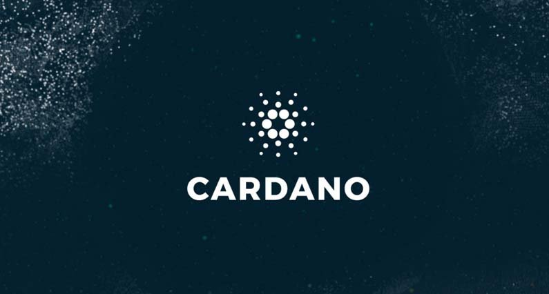
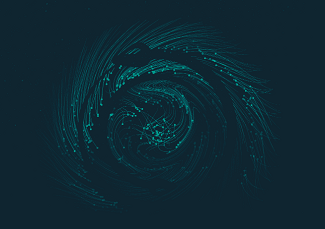
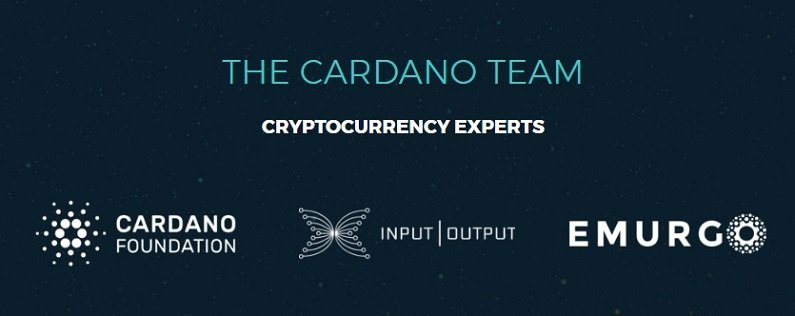

Mi az a Cardano (ADA)? Útmutató kezdőknek
Több mint két év tervezés és fejlesztés után Cardano 2017. szeptember 29-én indult útjára. Ethereum-hoz hasonlóan Cardano is egy Okos szerződés platform, amelynek legfőbb fókuszpontja a biztonság és bővíthetőség egy réteges felépítésen keresztül.
Harmadik generációs blokklánc
Bitcoin, mint az első kriptopénz egy első generációs kriptovaluta. Ezt követte a második generáció amely új funkciókkal bővült, vagy arra törekedtek, hogy javítsák azokat a területeket ahol Bitcoin nem szerepelt túl jól. Ezek a második generációs kriptovaluták általában Bitcoin leágazásai voltak, vagy jelentős ötleteket merítettek belőle.
A még újabb harmadik generációs kriptovaluták tanultak elődeiktől, és gyakran az alapoktól kezdve kezdték felépíteni technológiáikat, hogy elkerüljék elöljáróik által elkövetett hibákat.
Cardano az alapoktól lett felépítve Haskell programozási nyelven, tudományos szakértők értékelésével amely biztosítja, hogy a legbővíthetőbb és legbiztonságosabb legyen jelenleg a piacon.
Cardano célja nem az, hogy reformálja a teljes pénzügy rendszert. A céljuk, hogy blokklánc technológia segítségével olyan helyekre juttassák el ahol előzőleg ezt túl drága lett volna bevezetni. Különösen a fejlődő országokban.
Mi az a Cardano?
Cardano egy decentralizált nyilvános blokklánc és kriptopénz projekt amely teljesen nyílt forráskóddal rendelkezik. Cardano okos szerződés platformjának célja, hogy minden eddiginél fejlettebb funkciókkal rendelkezzen. Ez az első blokklánc platform amely kutatások eredményeként és tudományos filozófiákból jött létre.
Casdano az alapoktól lett felépítve Haskell nyelven amely egy funkcionális programozási nyelv. Haskell egy matematikai alapot használ amelynek eredménye egy sokkal biztonságosabb és megbízhatóbb protokoll.
Cardano működése
Cardano egy több rétegű megközelítést használ amely segít majd fenntartani a jövőbeli növekedést. Az első a Cardano Settlement Layer (CSL) amely a könyvelést kezeli, tehát a pénzmozgásokat a felhasználók között. A CSL proof of stake megegyezési algoritmust használ, hogy új blokkokat generáljon és megerősítse a tranzakciókat.
Második réteg pedig a Cardano Computation Layer (CCL) amely az okos szerződéseket kezeli. Ez a CCL réteg tartalmazza az információt, hogy bizonyos tranzakciók miért történtek.
Továbbá Cardano célja, hogy mellékláncokat is fejlesszen amelyek képesek lesznek együttműködni a Cardano hálózattal. Cardano ugyancsak szeretne decentralizált applikációkat futtatni.
Ez a réteg elválasztás lehetővé teszi, hogy az okos szerződések rugalmasabbak legyenek. Vállalkozások kihasználhatják ezt a szétválasztást, hogy jobban testre tudják szabni az okos szerződéseiket a különböző felhasználási eseteikhez.
Ouroboros
A kulcs amely alátámasztja a Cardano hálózatot és kriptovalutáját az „Ouroborus”. Ez egy biztonságos proof-of-stake rendszer amely meghatározza, hogy a csomópontok (node) a hálózatban, hogyan térnek megegyezésre az ADA főkönyv állapotáról. Más kriptopénzek is használnak proof-of-stake rendszert, azonban Ouroborus úgy lett tervezve, hogy a rosszakarók ne tudják kihasználni a hibákat, ezáltal sokkal biztonságosabb téve a rendszert.
Három szervezet vesz részt Cardano fejlesztésében. Az egyik a Cardano alapítvány amely egy Svájcban honos független létesítmény. A második az IOHK amely egy vezető kriptovaluta kutatási és fejlesztési cég. 2015-ben lett alapítva Charles Hoskinson (korábbi Ethereum vezérigazgató) és Jeremy Wood (korábbi Ethereum ügyvezető asszisztens) által. Végül pedig Emurgo amely egy start-up befektető cég.
Mint okos szerződés platform Cardano olyan kripto projektekkel versenyzik, mint Ethereum. De sok kisebb újabb projekttel is mint EOS, Lisk, NEO, és NEM. Cardano magas biztonságával és jó bővíthetőségével kíván kitűnni a rengetegből.
A Cardano csapat új programozási nyelvet fejleszt, hogy okos szerződéseket ezen a nyelven írják a programozok. Ez a nyelv a Plutus. A CCL támogatja a Solidarity-t amely az Ethereum hálózat programozási nyelve.
ADA
Minden blokklánc projektnek vagy egy kriptovalutája. Cardano hálózaté az ADA. ADA-val a felhasználók küldhetnek és fogadhatnak értéket vagy fizethetnek szolgáltatásokért. Ez a digitális fizetőeszköz a jövő pénzét jelképezi, gyors biztonságos és megbízható tranzakciókkal.
Az ADA kriptovaluta lesz a Dapp-ok fizetőeszköze is, illetve fejlesztők ezt használhatják fizetésre, hogy ha a Cardano hálózaton szeretnének építeni valamit.
Jelenleg 31 milliárd ADA van forgalomban, és a maximális készlet 45 milliárd lesz, amelyet a jövőben fognak „nyomtatni”. ADA nem bányászható.
ADA vásárlás
ADA megtalálható Binance vagy Bittrex-en. Ahhoz, hogy ADA-t vásárolj először Bitcoin-ra vagy Ethereum-ra lesz szükséged. Ezeket beszerezheted olyan weboldalakon mint Coinbase vagy BitPanda. Jelenleg nem sok kriptovaluta kereskedő oldal támogatja ADA-t, a folyamatosan bővülő teljes listát Cardano hivatalon weboldalán megtalálod. Binance és Bitfinex útmutató segítségedre lehet ADA vásárlásnál.
ADA tárolás
Jelenleg egy tárca van ahol tárolhatod ADA-t. Ez a hivatalos Daedalus tárca. Jelenleg elérhető Mac és Windows rendszereken, de egy mobil tárca is hamarosan kiadásra kerül.
Ledger Nano S is dolgozik, hogy képes legyen ADA tárolására, azonban semmi konkrét dátumot nem jelentetek még be.
Záró gondolatok
Még nagyon korai szakasza ez Cardano-nak. És ugyan a második rétegen dolgoznak de még nincs konkrét dátum mikor lesz kész. Tehát Cardano-nak egyelőre nincsen terméke és még nem képes okos szerződéseket kezelni, azonban ehhez az is hozzátartozik, hogy csak pár hónap telt el a nyilvánosságra lépésük óta.
Cardano igen nagy problémákat szeretne kijavítani a kripto iparban, amely sok hibalehetőséget hozhat magával. Charles Hoskinson a kormánynál azonban bizalomra adhat okot, hogy tudni fogja kezelni ezeket a felmerülő problémákat.